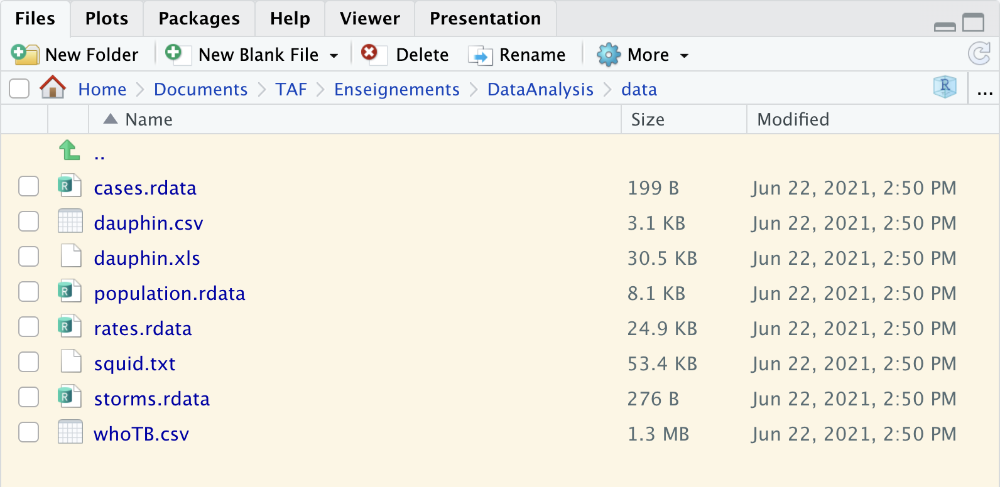
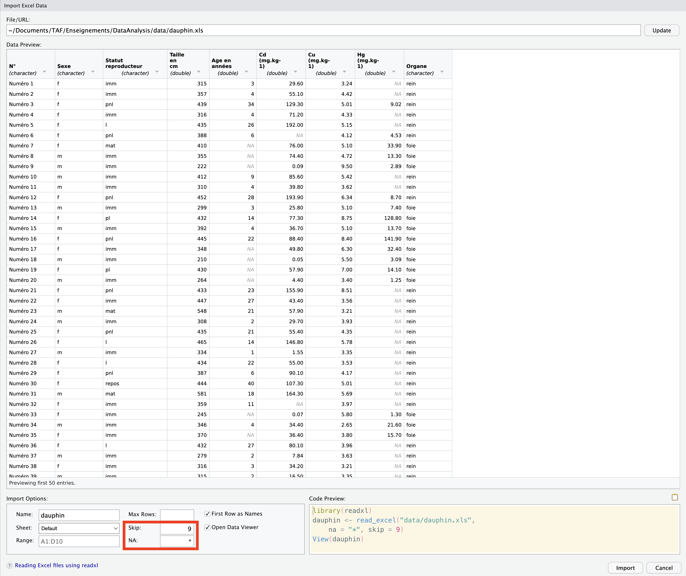
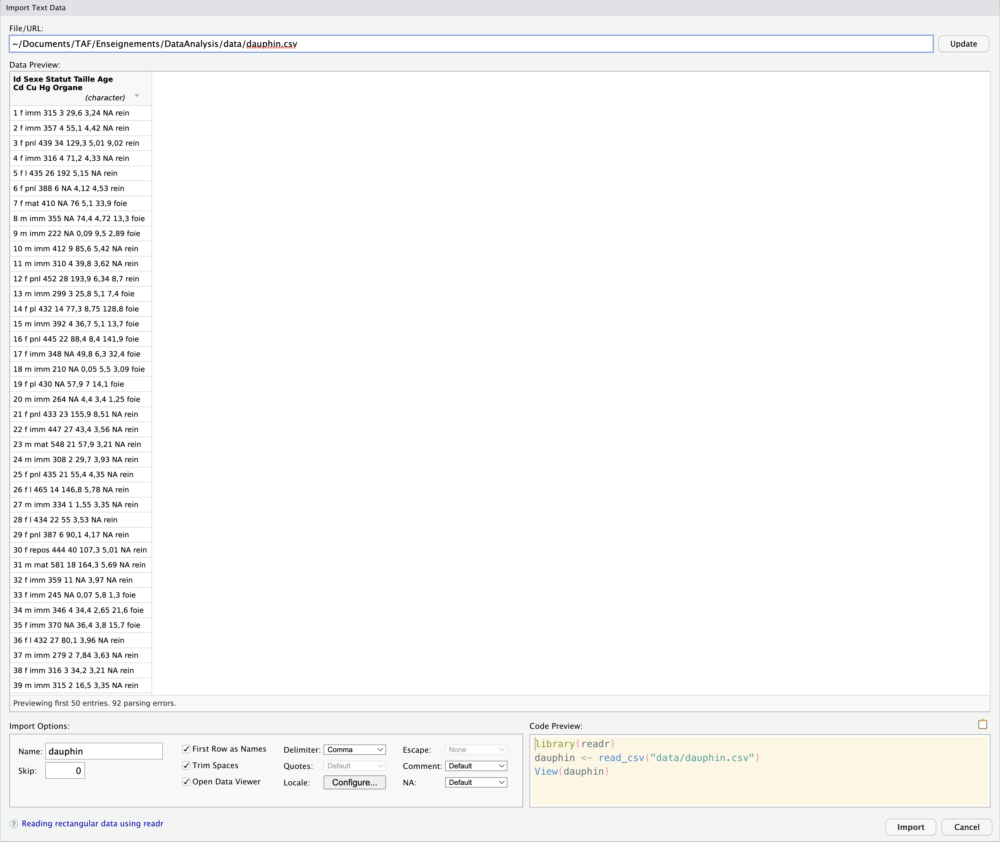
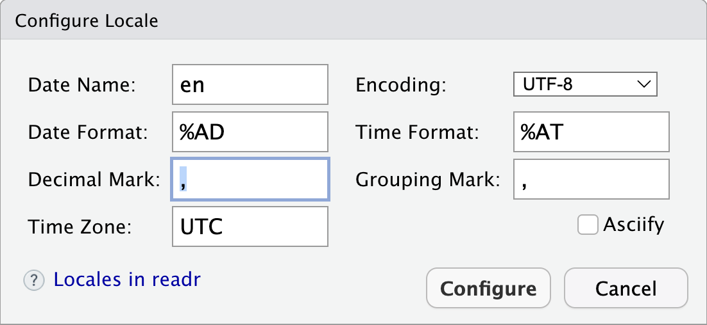

Dans la section @ref(objects), nous avons introduit le concept de tableaux de données ou data.frame dans R. Il s’agit d’une représentation rectangulaire des données, à la manière d’un tableur, dans laquelle les lignes correspondent aux observations et les colonnes correspondent à des variables décrivant chaque observation.
Dans ce chapitre, nous allons aller plus loin en présentant le concept de “tidy data”, ou “données nettes/rangées/soignées/ordonnées”. Vous verrez que l’idée d’avoir des données stockées dans un format “net” va plus loin que la simple définition usuelle que le terme “rangé” peut avoir lorsque les données sont simplement bien organisées dans un tableur. Nous définirons le terme “tidy data” de manière plus rigoureuse, en établissant un ensemble de règles permettant de stocker les données correctement afin de rendre plus aisées les analyses statistiques et les représentations graphiques.
Jusqu’à maintenant, vous avez utilisé des données qui étaient déjà dans ce format (c’est le cas des données contenues dans flights ou dans diamonds par exemple). Pourtant, la plupart du temps, les données que vous manipulerez dans R seront importées depuis un tableur dans lequel vous ou vos collaborateurs en aurez fait la saisie. S’assurer que les données importées manuellement dans R sont correctement “nettoyées” et mises en forme de “tidy data” est indispensable pour éviter les problèmes lors de la réalisation de graphiques (voir chapitre @ref(viz)) comme lors de la manipulation des données pour en tirer de l’information statistique pertinente (ce que nous verrons au chapitre @ref(wrangling)).
5.1 Prérequis
Dans ce chapitre, nous aurons besoin des packages suivants :
library(tidyr)library(dplyr)
Attachement du package : 'dplyr'
Les objets suivants sont masqués depuis 'package:stats':
filter, lag
Les objets suivants sont masqués depuis 'package:base':
intersect, setdiff, setequal, union
library(nycflights13)library(ggplot2)library(readxl) # la dernière lettre est un "L" minuscule, pas le chiffre 1...library(readr)
Comme d’habitude, si vous recevez des messages d’erreur, c’est probablement parce que le package que vous essayez de charger en mémoire n’a pas été installé au préalable. Consultez la section @ref(packages) si vous ne savez plus comment procéder.
Outre ces packages classiques, nous aurons aussi besoin du package EDAWR qui n’est pas disponible sur les serveurs habituels de R. Pour l’installer, on procède de la façon suivante :
Installez et chargez en mémoire le package remotes :
install.packages("remotes")library(remotes)
Installez le package EDAWR grâce à la fonction install_github() du package remotes qui va chercher le package sur le site https://github.com :
install_github("rstudio/EDAWR")
Attention, sur les ordinateurs de l’université cette procédure ne fonctionne pas toujours. Si vous rencontrez des difficultés, suivez les instructions décrites à la fin de cette section @ref(prerek)
Chargez le package EDAWR de la façon habituelle :
library(EDAWR)
Le package EDAWR contient plusieurs jeux de données dont nous allons nous servir pour illustrer les questions liées au format des tableaux de données. Pour en avoir la liste, vous pouvez taper :
data(package ="EDAWR")
En cas de problème pour installer le package EDAWR sur les ordinateurs de l’université.
Vous pouvez télécharger manuellement les 4 jeux de données dont nous aurons besoin grâce à ces 4 liens :
Une fois téléchargés, les données contenues dans ces 4 fichiers peuvent être importées dans RStudio en cliquant sur File > Open File..., puis en sélectionnant un à un chacun des fichiers. Pour chaque fichier un nouvel objet doit apparaître dans votre environnement de travail (onglet Environnement, dans le panneau en haut à droite de RStudio). L’inconvénient de cette méthode est que les fichiers d’aide de ces jeux de données ne seront pas disponibles dans RStudio. Vous pouvez toutefois en consulter une version brute (non mise en forme) en cliquant ici.
5.2 C’est quoi des “tidy data” ?
Les “tidy data” (nous les appellerons “données rangées” dans la suite de ce livre), sont des données qui respectent un format standardisé. En particulier :
Chaque variable est dans une colonne unique.
Chaque colonne contient une unique variable.
Chaque ligne correspond à une observation pour chaque variable.
Les cellules du tableau représentent les valeurs de chaque observation pour chaque variable.
La définition des ‘données rangées’, d’après http://r4ds.had.co.nz/tidy-data.html
Malheureusement, les données peuvent être présentées sous de nombreux formats qui ne respectent pas ces règles de base. La modification des tableaux est donc souvent un préambule nécessaire à toute analyse statistique ou représentation graphique.
Par exemple, examinez le tableau cases du package EDAWR, qui présente le nombre de cas de tuberculose dans 3 pays en 2011, 2012 et 2013.
cases
country 2011 2012 2013
1 FR 7000 6900 7000
2 DE 5800 6000 6200
3 US 15000 14000 13000
Dans ce tableau, essayez d’identifier quelles sont les variables en présence. Indice, vous devriez en trouver 3.
Essayez d’identifier également où se trouvent ces variables.
Pour ma part, je compte les 3 variables suivantes :
country : qui indique les pays dans lesquels les cas de tuberculose ont été dénombrés. Cette variable occupe la première colonne du tableau.
La seconde variable est l’année, qui peut prendre les valeurs 2011, 2012 ou 2013. Cette variable occupe la ligne des titres des 3 colonnes de droite du tableau.
Et enfin, la troisième variable est le nombre de cas de tuberculose observés dans chaque pays et chaque année. Cette troisième variable occupe 3 lignes et 3 colonnes du tableau.
Autrement dit, les variables peuvent être visualisées de la façon suivante :
Position des variables dans le tableau cases du package EDAWR
Donc même si nous disposons ici d’un tableau rectangulaire classique, nous sommes bien loin du format des données rangées.
5.2.1 La fonction pivot_longer()
Afin de transformer les données non rangées du tableau cases en données rangées, nous allons utiliser la fonction pivot_longer() du package tidyr. Avant d’aller plus loin, essayez d’imaginer à quoi le tableau rangé devrait ressembler.
La fonction pivot_longer() prend 4 arguments :
data : le nom du tableau de données que l’on souhaite “ranger”.
cols : La liste des colonnes du tableau initial que l’on souhaite rassembler en 2 nouvelles variables. Ici, les colonnes 2, 3 et 4 (on pourra les noter 2:4 ou, en utilisant leur nom, "2011":"2013").
names_to : le nom d’une nouvelle variable qui contiendra les en-têtes des colonnes qui constituent la seconde variable. Ici, nous nommerons cette seconde variable year car elle devra contenir les années 2011, 2012 et 2013.
values_to : le nom d’une nouvelle variable qui contiendra les informations correspondant à la troisième variable identifiée plus haut. Nous appelerons cette variables n_cases car elle contiendra les nombres de cas de tuberculose (7000, 5800, 15000, etc).
# A tibble: 9 × 3
country year n_cases
<chr> <chr> <dbl>
1 FR 2011 7000
2 FR 2012 6900
3 FR 2013 7000
4 DE 2011 5800
5 DE 2012 6000
6 DE 2013 6200
7 US 2011 15000
8 US 2012 14000
9 US 2013 13000
Nous avons bien transformé le tableau de départ en un “tableau rangé” : chacune de nos 3 variables se trouve dans une unique colone, et chaque ligne correspond à une observation pour chacune de ces 3 variables. Comme d’habitude, si nous souhaitons pouvoir utiliser ce nouveau tableau, il faut lui donner un nom :
Il nous est maintenant plus facile de manipuler ces données pour en tirer de l’information, grâce à des analyses statistiques ou des représentations graphiques :
ggplot(cases_tidy, aes(x = country, y = n_cases, fill = year)) +geom_col(position ="dodge", color ="black") +scale_fill_brewer(palette ="Accent") +theme_minimal(base_family ="Gill Sans") +labs(x ="Pays",y ="Nombre de cas",fill ="Année",title ="Évolution du nombre de cas de tuberculose entre 2011 et 2013",subtitle ="DE : Allemagne, FR : France, US : États-Unis")
Évolution du nombre de cas de tuberculose dans 3 pays, de 2011 à 2013.
On constate ici qu’entre 2011 et 2013, le nombre de cas de tuberculose a légèrement augmenté en Allemagne, est resté stable en France, et a diminué aux États-Unis.
Notez ici que la variable year de notre nouveau tableau est considérée comme une variable de type “chaîne de caractères” et non comme une variable numérique. On peut le voir en affichant notre tableau en tapant son nom, ou en utilisant la fonction str() déjà décrite plus tôt :
C’est le comportement par défaut de la fonction pivot_longer() : les anciens titres de colonnes sont convertis en chaînes de caractères. Si ce comportement n’est pas souhaitable, il y a 2 alternatives possibles :
utiliser les arguments names_transform et/ou values_transform de la fonction pivot_longer(). Cela permet de spécifier comment transformer les variables nouvellement créées au moment de leur création.
utiliser les fonctions mutate() et as.numeric() ou as.integer() après avoir modifié le tableau de départ avec pivot_longer(). Cette façon de faire sera décrite dans la partie @ref(mutate).
# On commence par afficher `cases`cases
country 2011 2012 2013
1 FR 7000 6900 7000
2 DE 5800 6000 6200
3 US 15000 14000 13000
# On utilise ensuite pivot_longer avec l'argument # names_transform pour transformer year en facteurpivot_longer(data = cases, cols =`2011`:`2013`, names_to ="year", values_to ="n_cases",names_transform =list(year = as.integer))
# A tibble: 9 × 3
country year n_cases
<chr> <int> <dbl>
1 FR 2011 7000
2 FR 2012 6900
3 FR 2013 7000
4 DE 2011 5800
5 DE 2012 6000
6 DE 2013 6200
7 US 2011 15000
8 US 2012 14000
9 US 2013 13000
On voit ici que la variable year est maintenant une colonne numérique (<int> : nombres entiers), et non plus une variable de type “character”. En utilisant as.numeric() au lieu de as.integer(), on aurait transformé la variable year en <dbl> (nombre réel au lieu de nombre entier), ce qui ici, reviendrait exactement au même.
De la même façon, on peut avoir besoin de presenter la colonne year sous la forme d’un facteur :
# A tibble: 9 × 3
country year n_cases
<chr> <fct> <dbl>
1 FR 2011 7000
2 FR 2012 6900
3 FR 2013 7000
4 DE 2011 5800
5 DE 2012 6000
6 DE 2013 6200
7 US 2011 15000
8 US 2012 14000
9 US 2013 13000
5.2.2 La fonction pivot_wider()
La fonction pivot_wider() permet de réaliser l’opération inverse de pivot_longer(). Elle “disperse” une unique colonne catégorielle en plusieurs colonnes, le tableau obtenue est donc plus large (“wider”) que le tableau de départ.
Reprenons par exemple notre tableau cases_tidy :
cases_tidy
# A tibble: 9 × 3
country year n_cases
<chr> <chr> <dbl>
1 FR 2011 7000
2 FR 2012 6900
3 FR 2013 7000
4 DE 2011 5800
5 DE 2012 6000
6 DE 2013 6200
7 US 2011 15000
8 US 2012 14000
9 US 2013 13000
La fonction pivot_wider() prend 3 arguments :
Le nom du tableau contenant les données (ici, cases_tidy).
names_from : le nom de la variable contenant les catégories qui devront être transformées en colonnes (ici, year).
values_from : le nom de la variable contenant les valeurs qui devront remplir les nouvelles colonnes (ici, n_cases).
# A tibble: 3 × 4
country `2011` `2012` `2013`
<chr> <dbl> <dbl> <dbl>
1 FR 7000 6900 7000
2 DE 5800 6000 6200
3 US 15000 14000 13000
Cette fonction sera donc rarement utilisée puisqu’elle ne permet pas d’obtenir des “tableaux rangés”. Toutefois, elle pourra vous être utile pour présenter des résultats sous forme synthétique. Prenons un exemple avec le jeu de données flights. Imaginons que vous deviez créer un tableau n_vols présentant, pour chacun des 3 aéroports de New York, le nombre de vols affrétés par chaque compagnie aérienne en 2013. Une possibilité serait de taper ceci :
# A tibble: 35 × 3
# Groups: origin, carrier [35]
origin carrier n
<chr> <chr> <int>
1 EWR 9E 1268
2 EWR AA 3487
3 EWR AS 714
4 EWR B6 6557
5 EWR DL 4342
6 EWR EV 43939
7 EWR MQ 2276
8 EWR OO 6
9 EWR UA 46087
10 EWR US 4405
# ℹ 25 more rows
Les commandes permettant de produire ce tableau seront expliquées dans le chapitre @ref(wrangling). On peut cependant constater ici que ce tableau contient 35 lignes et 3 colonnes. Il s’agit bien d’un “tableau rangé” parfaitement adapté pour faire des statistiques et des visualisations graphiques, mais son format n’est pas terrible si notre objectif est de le faire figurer dans un rapport. La solution : utiliser pivot_wider() :
# A tibble: 16 × 4
# Groups: carrier [16]
carrier EWR JFK LGA
<chr> <int> <int> <int>
1 9E 1268 14651 2541
2 AA 3487 13783 15459
3 AS 714 NA NA
4 B6 6557 42076 6002
5 DL 4342 20701 23067
6 EV 43939 1408 8826
7 MQ 2276 7193 16928
8 OO 6 NA 26
9 UA 46087 4534 8044
10 US 4405 2995 13136
11 VX 1566 3596 NA
12 WN 6188 NA 6087
13 HA NA 342 NA
14 F9 NA NA 685
15 FL NA NA 3260
16 YV NA NA 601
Ce nouveau tableau contient maintenant 16 lignes (une par compagnie aérienne), et 4 colonnes : une pour la variable carrier, et 3 pour la variable origin, soit une colonne pour chacun des 3 aéroports de New York. On parle de tableau au format large (par opposition au “tableau rangé”, dit “format long”). Cela rend la présentation dans un rapport plus aisée.
Notez également que certaines compagnies aériennes ne desservent pas tous les aéroports. Par exemple, la compagnie Alaska Airlines (AS) ne dessert ni JFK, ni La Guardia. Pour ces catégories, notre nouveau tableau au format large indique NA. Or, NA signifie “Not Available”, autrement dit : données manquantes. Ici, il ne s’agit pas du tout de données manquantes. Cela signifie simplement qu’aucun vol d’Alaska Airline n’a décollé de ces 2 aéroports. Nous pouvons donc indiquer à R quelle valeur utiliser pour les catégories qui ne sont pas représentées dans le tableau de départ grâce à l’argument values_fill :
pivot_wider(n_vols, names_from = origin, values_from = n, values_fill =0)
D’autres arguments existent. Je vous encourage vivement à consulter l’aide des fonctions pivot_longer() et pivot_wider() et à faire des essais.
5.2.3 Les fonctions separate() et unite()
Ces fonctions sont complémentaires : tout comme pivot_longer() et pivot_wider(), elles effectuent 2 opérations opposées. Reprenons le jeu de données cases_tidy :
cases_tidy
# A tibble: 9 × 3
country year n_cases
<chr> <chr> <dbl>
1 FR 2011 7000
2 FR 2012 6900
3 FR 2013 7000
4 DE 2011 5800
5 DE 2012 6000
6 DE 2013 6200
7 US 2011 15000
8 US 2012 14000
9 US 2013 13000
Imaginons que nous ayons besoin de séparer les données de la colonne year en 2 variables : le siècle d’une part, et l’année d’autre part. La fonction separate() permet de faire exactement cela :
separate(cases_tidy, year, into =c("century", "year"), sep =2)
# A tibble: 9 × 4
country century year n_cases
<chr> <chr> <chr> <dbl>
1 FR 20 11 7000
2 FR 20 12 6900
3 FR 20 13 7000
4 DE 20 11 5800
5 DE 20 12 6000
6 DE 20 13 6200
7 US 20 11 15000
8 US 20 12 14000
9 US 20 13 13000
Le premier argument est le nom du tableau de données.
Le second argument est la variable que l’on souhaite scinder en plusieurs morceaux.
into est un vecteur qui contient le nom des nouvelles colonnes à créer
sep peut prendre plusieurs formes. Lorsqu’on utilise un nombre, ce nombre correspond à la position de la coupure dans la variable d’origine. Ici, la variable d’origine a été coupée après le second caractère. Il est aussi possible d’utiliser un symbole. Par exemple, certaines variables contiennent des tirets - ou des slash \. Utiliser ces caractères en guise de séparateur permet de couper les variables à ce niveau là. Nous en verrons un exemple plus tard.
Notez ici que les 2 nouvelles variables sont de type <chr>. Si nous souhaitons que ces variables soient considérées comme numériques, nous devons ajouter un argument lorsque nous utilisons separate() :
cases_split <-separate(cases_tidy, year, into =c("century", "year"), sep =2, convert =TRUE)cases_split
# A tibble: 9 × 4
country century year n_cases
<chr> <int> <int> <dbl>
1 FR 20 11 7000
2 FR 20 12 6900
3 FR 20 13 7000
4 DE 20 11 5800
5 DE 20 12 6000
6 DE 20 13 6200
7 US 20 11 15000
8 US 20 12 14000
9 US 20 13 13000
Notre nouvel objet cases_split contient maintenant 2 nouvelles colonnes de nombres entiers, l’une contenant le siècle, l’autre contenant l’année.
La fonction unite() fait exactement le contraire : elle fusionne 2 colonnes existantes en accolant leurs contenus (et en ajoutant un séparateur) :
unite(cases_split, new, century, year)
# A tibble: 9 × 3
country new n_cases
<chr> <chr> <dbl>
1 FR 20_11 7000
2 FR 20_12 6900
3 FR 20_13 7000
4 DE 20_11 5800
5 DE 20_12 6000
6 DE 20_13 6200
7 US 20_11 15000
8 US 20_12 14000
9 US 20_13 13000
La colonne new a été créée par la fusion des colonnes century et year du tableau cases_split. Si l’on souhaite supprimer le tiret, il nous faut le spécifier explicitement :
unite(cases_split, new, century, year, sep ="")
# A tibble: 9 × 3
country new n_cases
<chr> <chr> <dbl>
1 FR 2011 7000
2 FR 2012 6900
3 FR 2013 7000
4 DE 2011 5800
5 DE 2012 6000
6 DE 2013 6200
7 US 2011 15000
8 US 2012 14000
9 US 2013 13000
5.2.4 Exercices
Examinez les tableaux rates, storms et population du package EDAWR.
Ces tableaux sont-ils des “tableaux rangés” (tidy data) ?
Si oui, quelles sont les variables représentées ?
Si non, transformez-les en “tableaux rangés”.
5.3 Importer des données depuis un tableur
5.3.1 Les règles de base
Jusqu’à maintenant, nous avons travaillé exclusivement avec des jeux de données déjà disponibles dans R. La plupart du temps, les données sur lesquelles vous devrez travailler devront au préalable être importées dans R, à partir de fichiers issus de tableurs. De tels fichiers se présentent généralement sous l’un des 2 formats suivants :
Fichiers au format “.csv” : il s’agit d’un format de fichier dit “texte brut”, c’est à dire qu’il peut être ouvert avec n’importe quel éditeur de texte, y compris le bloc notes de Windows. L’extension “.csv” est l’abbréviation de Comma Separated Values, autrement dit, dans ce type de fichiers, les colonnes sont séparées par des virgules. Cela peut poser problème en France puisque le symbole des décimales est souvent aussi la virgule (et non le point comme dans les pays anglo-saxons). Le séparateur de colonnes utilisé en France dans les fichiers .csv est alors souvent le point-virgule. Il est possible de créer des fichiers .csv à partir de n’importe quel tableur en choisissant Fichier > Exporter... ou Fichier > Enregistrer sous... puis en sélectionnant le format approprié (les dénomminations sont variables selon les logiciels : format texte brut, format csv, plain text, etc…).
Fichiers au format tableur : .xls ou .xlsx pour Excel, .calc pour Open Office.
Dans les 2 cas, pour que R puisse importer les données contenues dans ces fichiers, un certain nombre de règles doivent être respectées :
La première chose à laquelle il faut veiller est la présentation des données. Les variables doivent être en colonnes et les observations en lignes. Dans l’idéal, les données doivent donc être “rangées”.
Les cases vides qui correspondent à des données manquantes doivent contenir les lettres NA en majuscule. Il est important de bien faire la distinction entre les vrais zéros (i.e. les grandeurs mesurées pour lesquelles un zéro a été obtenu), et les valeurs manquantes, c’est à dire pour lesquelles aucune valeur n’a pu être obtenue (e.g. variable non mesurée pour un individu donné ou à une station donnée).
Il est généralement conseillé d’utiliser la première ligne du tableau pour stocker le nom des variables et la première colonne pour stocker le nom des observations (identifiant des individus, des échantillons ou des stations par exemple).
Ne jamais utiliser de caractères spéciaux tels que #, $, %, ^, &, *, (, ), {, }, [, ], des accents, des cédilles des guillemets ou des apostrophes… Cela pourrait causer des erreurs dans R. Si votre fichier en contient, faites une recherche (via le menu Edition > Rechercher et remplacer...) pour remplacer chaque instance par un caractère qui ne posera pas de problème.
Évitez les espaces dans vos noms de variables, d’observations ou de catégories et remplacez-les par des points ou des _.
Si des noms de lignes sont présents dans votre tableau, chaque ligne doit avoir un nom unique (il ne faut pas que plusieurs lignes portent le même nom).
Des noms courts pour les variables sont généralement plus faciles à manipuler par la suite.
La première valeur de votre tableau derait toujours se trouver dans la cellule A1 du tableur. Autrement dit, il ne devrait jamais y avoir de lignes incomplètes ou de lignes de commentaires au-dessus des données, ou de colonne vide à gauche de votre tableau. D’ailleurs, il ne devrait jamais y avoir de commentaires à droite ou en dessous de vos données non plus.
5.3.2 Fichiers au format tableur (.xls ou .xlsx)
À titre d’exemple, téléchargez le fichier dauphin.xls et placez-le dans votre répertoire de travail. Ce jeu de données contient des résultats de dosages de différents métaux lourds (cadmium, cuivre et mercure) dans différents organes (foie et rein) de plusieurs dauphins communs Delphinus delphis. Les informations de taille, d’âge et de statut reproducteur sont également précisées. Ouvrez ce fichier dans un tableur. Vous constaterez que son format ne permet pas de l’importer tel quel dans R :
Il contient des lignes vides inutiles au-dessus des données.
Il contient des commentaires inutiles au-dessus des données.
Les titres de colonnes sont complexes et contiennent des caractères spéciaux.
Dans le tableau, les données manquantes sont représentées soit par des “*”, soit par des cellules vides.
Importer un tel jeu de données dans R par les méthodes classiques (c’est-à-dire sans utiliser RStudio et uniquement grâce aux fonctions de base de R) demanderait donc un gros travail de mise en forme préalable. Heureusement, RStudio et le package readxl facilitent grandement le processus.
Dans RStudio, localisez l’onglet Files situé dans le panneau en bas à droite de l’interface du logiciel. Dans ce panneau, naviguez jusqu’à votre répertoire de travail, qui doit maintenant contenir le fichier daupin.xls que vous avez téléchargé. Cliquez sur son nom, puis, dans le menu qui s’affiche, choisissez Import Dataset... :

L’option Import Dataset... dans la fenêtre Files de RStudio
La nouvelle fenêtre qui s’ouvre est un “assistant d’importation” (figure @ref(fig:import2)).
L’assistant d’importation de RStudio
Cette fenêtre contient plusieurs zones importantes :
File/URL (en haut) : lien vers le fichier contenant les données, sur votre ordinateur ou en ligne.
Data Preview : zone principale affichant les 50 premières lignes du fichier que l’on souhaite importer.
Import Options (en bas à gauche) : zone dans laquelle des options permettant d’importer les données correctement peuvent être spécifiées.
Code Preview (en bas à droite) : les lignes de codes que vous pourrez copier-coller dans votre script une fois les réglages corrects effectués.
Ici, nous constatons que les données ne sont pas au bon format. La première chose que nous pouvons faire est d’indiquer à R que nous souhaitons ignorer les 9 premières lignes du fichier. Ensuite, nous précisons à RStudio que l’étoile “*” a été utilisée pour indiquer des données manquantes (figure @ref(fig:import3)) :

Les bons réglages pour ce fichier
Notez qu’à chaque fois que vous modifiez une valeur dans la zone Import Options, 2 choses se produisent simultanément :
La zone Data Preview est mise à jour. Cela permet de s’assurer que les changements effectués ont bien les effets escomptés.
La zone Code Preview est mise à jour. Cela permet de copier-coller dans un script les commandes permettant d’importer correctement les données. Ici, voilà le code que nous devons ajouter à notre script :
dauphin <-read_excel("data/dauphin.xls", na ="*", skip =9)
La commande library(readxl) est inutile puisque nous l’avons déjà saisie au début de ce chapitre. Nous disposons maintenant d’un nouvel objet nommé dauphin. Il est stocké sous la forme d’un tibble :
dauphin
# A tibble: 93 × 9
`N°` Sexe `Statut reproducteur` `Taille en cm` `Age en années`
<chr> <chr> <chr> <dbl> <dbl>
1 Numéro 1 f imm 315 3
2 Numéro 2 f imm 357 4
3 Numéro 3 f pnl 439 34
4 Numéro 4 f imm 316 4
5 Numéro 5 f l 435 26
6 Numéro 6 f pnl 388 6
7 Numéro 7 f mat 410 NA
8 Numéro 8 m imm 355 NA
9 Numéro 9 m imm 222 NA
10 Numéro 10 m imm 412 9
# ℹ 83 more rows
# ℹ 4 more variables: `Cd (mg.kg-1)` <dbl>, `Cu (mg.kg-1)` <dbl>,
# `Hg (mg.kg-1)` <dbl>, Organe <chr>
Notez toutefois que les noms de colonnes complexes sont toujours présents. Avec de tels noms, les variables ne seront pas faciles à manipuler et les risques d’erreurs de frappes seront nombreux. Nous avons tout intérêt à les modifier à l’aide de la fonction names() :
# A tibble: 93 × 9
ID Sexe Statut Taille Age Cd Cu Hg Organe
<chr> <chr> <chr> <dbl> <dbl> <dbl> <dbl> <dbl> <chr>
1 Numéro 1 f imm 315 3 29.6 3.24 NA rein
2 Numéro 2 f imm 357 4 55.1 4.42 NA rein
3 Numéro 3 f pnl 439 34 129. 5.01 9.02 rein
4 Numéro 4 f imm 316 4 71.2 4.33 NA rein
5 Numéro 5 f l 435 26 192 5.15 NA rein
6 Numéro 6 f pnl 388 6 NA 4.12 4.53 rein
7 Numéro 7 f mat 410 NA 76 5.1 33.9 foie
8 Numéro 8 m imm 355 NA 74.4 4.72 13.3 foie
9 Numéro 9 m imm 222 NA 0.09 9.5 2.89 foie
10 Numéro 10 m imm 412 9 85.6 5.42 NA rein
# ℹ 83 more rows
Enfin, vous pouvez égalememnt noter que certaines variables devraient être modifiées :
Les variables Sexe, Statut (qui contient l’information de statut reproducteur des dauphins) et Organe (qui indique dans quel organe les métaux ont été dosés) sont de type <chr>. L’idéal serait de disposer de facteurs puisqu’ils s’agit de variables catégorielles.
La variable ID est totalement inutile puisqu’elle est parfaitement redondante avec le numéro de ligne. Nous pourrions donc la supprimer.
Certaines catégories (ou niveaux) de la variable Statut devraient être ordonnées puisqu’elles reflètent une progression logique : imm (immature), mat (mature), pnl (pregnant non lactating), pl (pregnant lactating), l (lactating), repos (repos somatique).
Nous verrons dans la partie @ref(wrangling) comment effectuer simplement ces différentes opérations.
5.3.3 Fichiers au format texte brut (.csv)
Nous allons utiliser les mêmes données que précédemment, mais cette fois-ci, elles sont contenues dans un fichier au format .csv. Téléchargez le fichier dauphin.csv (pour cela, faites un clic droit sur le lien et choisissez Enregistrez la cible du lien sous... ou une mention équivalente), placez-le dans votre répertoire de travail, et ouvrez-le avec le bloc notes Windows ou tout autre éditeur de texte brut disponible sur votre ordinateur. Attention : Microsoft Word n’est pas un éditeur de texte brut. Un fichier au format .doc ou .docx est illisible dans un éditeur de texte brut car outre le texte, ces formats de documents contiennent toutes les informations concernant la mise en forme du texte (polices de caractères, tailles, couleurs et autres attributs, présence de figures, de tableaux dans le document, etc.).
À l’inverse, les fichiers au format .txt, .csv et même .R (vos scripts !) sont des fichiers au format texte brut. Vous pouvez d’ailleurs essayer d’ouvrir dauphin.csv depuis RStudio, en allant dans la fenêtre Files puis en cliquant sur le nom du fichier et en choisissant View File. RStudio ouvre un nouvel onglet à côté de votre script vous permettant d’inspecter le contenu de ce fichier. Par rapport au fichier Excel, vous pouvez noter un certain nombre de différences :
Les colonnes sont séparées par des tabulations.
Les nombres décimaux utilisent la virgule (et non le point comme dans les pays anglo-saxons).
Les noms de colonnes ont déjà été corrigés/simplifiés par rapport au tableau d’origine.
Les valeurs manquantes sont toutes codées par des NAs.
Un travail d’édition du fichier .xls de départ a donc été réalisé en amont de l’enregistrement au format .csv.
Attention, à ce stade, vous avez ouvert un fichier au format texte brut dans RStudio, mais les données contenues dans ce fichier n’ont pas été importées dans R pour autant. Pour les importer, on procède comme pour les fichiers au format tableur (voir section @ref(tableur) ci-dessus).
On commence par cliquer sur dauphin.csv dans l’onglet Files de RStudio. On sélectionne ensuite Import Dataset... :
Importer un fichier .csv depuis l’onglet Files de RStudio
La fenêtre qui s’ouvre est en tous points identique à celle obtenue pour l’importation de fichiers tableurs (figure @ref(fig:importcsv2)).

Importer un fichier .csv depuis l’onglet Files de RStudio
Nous voyons ici que par défaut, RStudio considère qu’une unique colonne est présente. En effet, les fichiers .csv utilisent généralement la virgule pour séparer les colonnes. Ce n’est pas le cas ici. Il nous faut donc sélectionner, dans le champ Delimiter, l’option Tab (tabulation) et non Comma (virgule).
À ce stade, chaque variable est maintenant reconnue comme telle, chaque variable occupe donc une colonne distincte. Mais les colonnes Cd, Cu et Hg ne contiennent pas les bonnes valeurs (vous pouvez le vérifier en consultant l’onglet dauphin.csv que vous avez ouvert un peu plus tôt à côté de votre script). La cause est simple : R s’attend à ce que les nombres décimaux utilisent le point en guise de symbole des décimales. Or, notre fichier .csv utilise la virgule. C’est une convention qui dépend du pays dans lequel vous vous trouvez, et de la langue de votre système d’exploitation (en langage technique, on parle de Locale). Le fichier dauphin.csv ayant été créé sur un ordinateur français, la virgule a été utilisée en guise de symbole des décimales. Pour l’indiquer à R, cliquez sur Locale > Configure..., changez le . en , dans le champ Decimal Mark et validez en cliquant sur Configure.

Changement du symbole utilisé pour les décimales
Les données sont maintenant au bon format, prêtes à être importées dans RStudio. Afin de ne pas écraser l’objet dauphin que nous avons créé à partir du fichier tableur un peu plus tôt, nous stockerons ces nouvelles données dans un objet nommé dauphin2. Pour cela, ajoutez un 2 au nom dauphin dans le champ Name en bas à gauche :
Les données, dans un format correct permettant l’importation
Nous n’avons plus qu’à copier-coller dans notre script le code généré automatiquement en bas à droite de la fenêtre (comme précédemment, la ligne library(readr) est inutile : nous avons déjà chargé ce package en début de chapitre).
Rows: 93 Columns: 9
── Column specification ────────────────────────────────────────────────────────
Delimiter: "\t"
chr (3): Sexe, Statut, Organe
dbl (6): Id, Taille, Age, Cd, Cu, Hg
ℹ Use `spec()` to retrieve the full column specification for this data.
ℹ Specify the column types or set `show_col_types = FALSE` to quiet this message.
Notez que :
C’est le package readr et non plus readxl qui est utilisé.
La fonction read_delim() a remplacé la fonction read_excel(). Il existe beaucoup d’autres fonctions selon le format de vos données (par exemple read_csv() et read_csv2()). Il est inutile de toutes les connaître dans la mesure où généralement, RStudio vous propose automatiquement la plus appropriée.
R indique de quelle façon les colonnes ont été “parsées”, autrement dit, R indique quelles fonctions ont été utilisées pour reconnaître le type des données présentes dans chaque colonne.
Toutes les fonctions permettant d’importer des données n’ont pas nécessairement le même comportement. Ainsi, si l’on compare les objets importés depuis le fichier tableur (dauphin) et depuis le fichier texte brut (dauphin2), le type de certaines variables peut être différent :
dauphin
# A tibble: 93 × 9
ID Sexe Statut Taille Age Cd Cu Hg Organe
<chr> <chr> <chr> <dbl> <dbl> <dbl> <dbl> <dbl> <chr>
1 Numéro 1 f imm 315 3 29.6 3.24 NA rein
2 Numéro 2 f imm 357 4 55.1 4.42 NA rein
3 Numéro 3 f pnl 439 34 129. 5.01 9.02 rein
4 Numéro 4 f imm 316 4 71.2 4.33 NA rein
5 Numéro 5 f l 435 26 192 5.15 NA rein
6 Numéro 6 f pnl 388 6 NA 4.12 4.53 rein
7 Numéro 7 f mat 410 NA 76 5.1 33.9 foie
8 Numéro 8 m imm 355 NA 74.4 4.72 13.3 foie
9 Numéro 9 m imm 222 NA 0.09 9.5 2.89 foie
10 Numéro 10 m imm 412 9 85.6 5.42 NA rein
# ℹ 83 more rows
dauphin2
# A tibble: 93 × 9
Id Sexe Statut Taille Age Cd Cu Hg Organe
<dbl> <chr> <chr> <dbl> <dbl> <dbl> <dbl> <dbl> <chr>
1 1 f imm 315 3 29.6 3.24 NA rein
2 2 f imm 357 4 55.1 4.42 NA rein
3 3 f pnl 439 34 129. 5.01 9.02 rein
4 4 f imm 316 4 71.2 4.33 NA rein
5 5 f l 435 26 192 5.15 NA rein
6 6 f pnl 388 6 NA 4.12 4.53 rein
7 7 f mat 410 NA 76 5.1 33.9 foie
8 8 m imm 355 NA 74.4 4.72 13.3 foie
9 9 m imm 222 NA 0.09 9.5 2.89 foie
10 10 m imm 412 9 85.6 5.42 NA rein
# ℹ 83 more rows
En particulier selon la version des packages que vosu utilisez et les réglages spéifiques de vos systèmes d’exploitation, les variables Taille et Age sont parfois considérées comme réelles dans dauphin mais comme entières dans dauphin2 (ce n’est pas le cas ici). Afin d’éviter les confusions dans la suite du document, nous allons supprimer dauphin2 en tapant :
rm(dauphin2)
Taper dauphin2 dans la console devrait maintenant produire une erreur :
dauphin2
Error in eval(expr, envir, enclos): objet 'dauphin2' introuvable
5.3.4 En cas de problème…
Il arrive parfois que l’importation de fichiers textes bruts par la méthode décrite ci-dessus échoue en raison d’un bug du package readr qui gère mal la présence de caractères spéciaux (accents, cédilles, etc) dans le chemin des fichiers que l’on tente d’importer. À l’heure où j’écris ces lignes (28 novembre 2018), le bug a été corrigé dans la version de développement du package, mais toujours pas dans la version stable disponible au téléchargement sur les serveurs du CRAN. Il est donc utile de connaître une méthode alternative pour importer de tels fichiers dans R. Cette méthode repose sur “la mère de toutes les fonctions d’importation” : read.table().
La fonction read.table() est à la base de la plupart des fonctions d’importation décrites dans ce chapitre. Il est donc important d’en connaître la syntaxe et les arguments les plus importants. Cette fonction requiert en général les arguments suivants :
Le chemin du fichier texte contenant les données à importer. Si le fichier se trouve dans votre répertoire de travail, il suffit de donner son nom. S’il est dans un sous-dossier de votre répertoire de travail, il faut donner le nom complet : "sous_dossier/nom_du_fichier.csv".
sep : la spécification du symbole utilisé en guise de séparateur de colonnes dans le fichier texte. Cela peut-être la virgule (sep = ","), le point virgule (sep = ";") ou encore la tabulation (sep = "\t") selon les fichiers importés.
dec : la spécification du symbole utilisé en guise de symbole pour les décimales. Il n’est pas nécessaire de spécifier cet argument lorsque le symbole dans le fichier source est le point. Mais si c’est une virgule (comme c’est souvent le cas dans les pays francophones), il faut alors préciser dec = ",".
header : la première ligne du fichier source contient-elle des noms de variables. Si oui, il faut indiquer header = TRUE.
Ainsi, par exemple, pour le fichier dauphin.csv, on peut taper ceci :
# A tibble: 93 × 9
Id Sexe Statut Taille Age Cd Cu Hg Organe
<int> <chr> <chr> <int> <int> <dbl> <dbl> <dbl> <chr>
1 1 f imm 315 3 29.6 3.24 NA rein
2 2 f imm 357 4 55.1 4.42 NA rein
3 3 f pnl 439 34 129. 5.01 9.02 rein
4 4 f imm 316 4 71.2 4.33 NA rein
5 5 f l 435 26 192 5.15 NA rein
6 6 f pnl 388 6 NA 4.12 4.53 rein
7 7 f mat 410 NA 76 5.1 33.9 foie
8 8 m imm 355 NA 74.4 4.72 13.3 foie
9 9 m imm 222 NA 0.09 9.5 2.89 foie
10 10 m imm 412 9 85.6 5.42 NA rein
# ℹ 83 more rows
Puisque la fonction read.table() importe les données sous la forme d’un data.frame, il est nécessaire de transformer le tableau obtenu en tibble grâce à la fonction as_tibble() afin de bénéficier de tous les avantages de ce format d’objet.
Indice : les droites de régression avec les intervalles de confiance sont ajoutés grâce à la fonction geom_smooth(method = "lm").
Importez dans R le jeu de données whoTB.csv. Ce jeu de données contient les cas de tuberculose (TB) rapportés par l’Organisation Mondiale de la Santé (OMS, ou WHO en anglais : World Health Organization). Les cas sont répertoriés par année, pays, âge, sexe, type de tuberculose et méthode de diagnostique. Selon vous, ce jeu de données est-il “rangé” ? Pourquoi ?
Si ce jeu de données n’est pas rangé, rangez-le en utilisant les fonctions du packages tidyr que nous avons découvertes dans ce chapitre : pivot_longer(), pivot_wider(), separate() et unite() (vous n’aurez pas nécessairement besoin d’utiliser ces 4 fonctions, et à l’inverse, certaines devront peut-être être utilisées plusieurs fois).
Pour vous aider, l’OMS donne la signification des codes utilisés en guise de noms pour la plupart des colonnes. Ainsi :
new indique des nouveaux cas, old des anciens (ici, seuls des nouveaux cas sont rapportés).
Le type de cas est précisé ensuite :
sp signifie “Smear Positive” (tuberculose pulmonaire à frottis positif).
sn signifie “Smear Negative” (tuberculose pulmonaire à frottis négatif).
rel signifie “relapse” (rechute).
ep signifie “Extra Pulmonary” (tuberculose extra-pulmonaire).
Le sexe est codé par m (male) ou f (female).
Enfin, les chiffres correspondent à des tranches d’âges : 014 signifie “de 0 à 14 ans”, “1524” signifie “de 15 à 24 ans”, etc.
Dans ces colonnes aux noms composés, les nombres de cas de tuberculose sont rapportés.